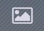
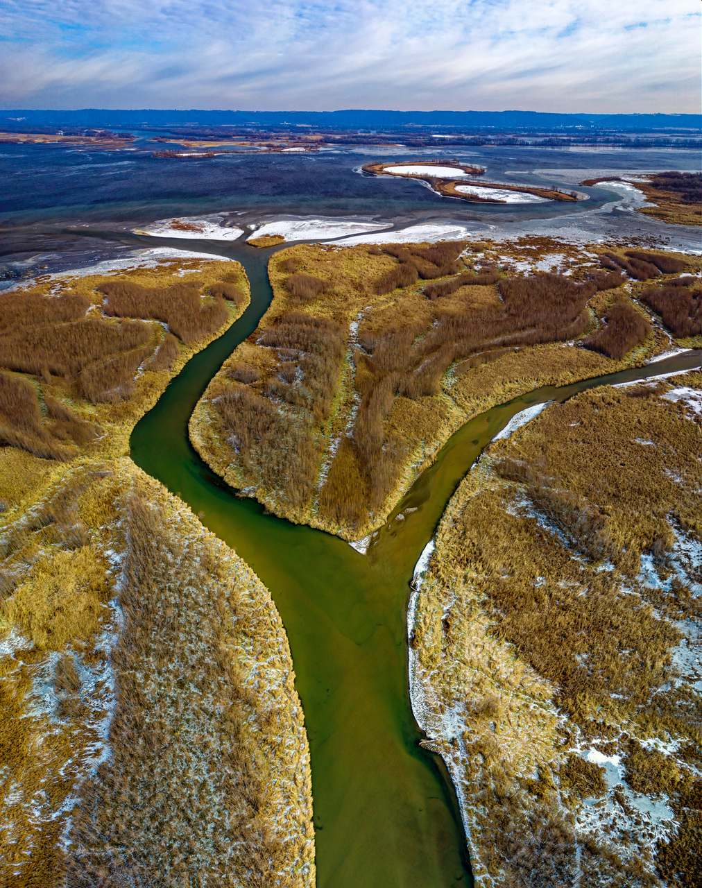

Vamos explorar alguns locais
Você está na: África
 Voltar para a página principal
Voltar para a página principalPontos turísticos conhecidos
.png)
 Veja algumas sugestões:
Veja algumas sugestões:
1.Pirâmides de Gizé, localizado no Egito
As pirâmides de Gizé do Egito são uma das maravilhas arquitetônicas do mundo.Com mais de 4500 anos,elas foram construídas como tumbas de faraós.São três pirâmides principais: A Grande Pirâmide de Quéops, a Pirâmide de Quéfren e a Pirâmide de Miquerinos.
Veja de uma maneira mais realista:
Para melhor experiência, selecione  Hide Fullscreen
As pirâmides de Gizé são um verdadeiro tributo à arquitetura e engenharia do Antigo Egito.A Grande pirâmide de Quéops é a maior de todas, com mais de 140 metros de altura,e foi considerada a mais alta construção do século XIX.
2.Parque Nacional Kruger, localizado na África do Sul
Este parque nacional de Kruger é um dos melhores lugares para a observação de animais selvagens, incluindo leões, elefantes, búfalos, leopardos e rinocerontes.
A vida selvagem é bastante conservada neste local.
Veja de uma maneira mais realista:
Para melhor experiência, selecione Hide Fullscreen
4.No continente africano você encontra o Marrakech, em Marrocos
Uma cidade vibrante e culturalmente rica, Marrakech é famosa por seus mercados, jardins exóticos, mesquitas histórias e arquitetura tradicional.
Veja de uma maneira mais realista:
Para melhor experiência, selecione Hide Fullscreen
6.Delta do Okavango
No continente africado você encontra o Delta do Okavango, localizado em Botsuana.
É um dos maiores deltas interiores do mundo, o Delta do Okavango é um paraíso para os amantes da natureza, com uma grande variedade de espécies animais e vegetais.
O Delta do Okavango é uma grande região pantanosa no norte de Botsuana,onde as águas das inundações sazonais no rio Okavango se espalham para criar um dos maiores sistemas fluviais interiores do mundo.
Veja de uma maneira mais realista:
Para melhor experiência, selecione Hide Fullscreen
7.Pirâmides de Meroé
No continente africano você encontra as Pirâmides de Meroé, localizadas no Sudão.
Essas pirâmides são um exemplo da antiga civilização do Reino de Kush, que existiu no que é hoje o Sudão.
Veja de uma maneira mais realista:
Para melhor experiência, selecione Hide Fullscreen
9.Parque Nacional dos Vulcões
No continente africado você encontra o Parque Nacional dos Vulcões,localizado em Ruanda.
Play Google Drive
Este parque abriga uma grande população de gorilas de montanha, uma espécie ameaçada de extinção,e oferece a oportunidade de fazer trilhas para observá-los de perto.